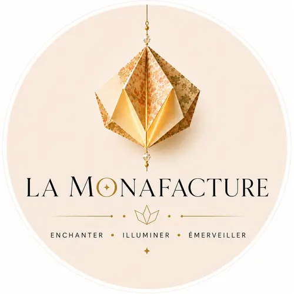

Pièce façonnée à la main
Lys au crépuscule
Des fleurs de lys en papier japonais, pliées une à une et révélées par une lumière chaude.
Vue d’ensemble · détails


Abat-jours, guirlandes lumineuses et suspensions faits main
Mille façons de la révéler
Elle traverse le papier, révèle les tissus, accroche les cristaux et transforme chaque création en une lumière singulière.
Des fleurs et des formes de papier qui dessinent la lumière dans l’espace. Chaque élément est plié et assemblé à la main.
Pièce façonnée à la main
Des fleurs de lys en papier japonais, pliées une à une et révélées par une lumière chaude.
Vue d’ensemble · détails
Pièce façonnée à la main
Rouges, violets et ors : un jardin suspendu qui s’allume comme une constellation.
Vue d’ensemble · détails
Pièce façonnée à la main
Des fleurs généreuses et vibrantes, comme une végétation imaginaire dans la nuit.
Vue d’ensemble · détails
Pièce façonnée à la main
Une composition géométrique en papiers japonais, pensée comme une pluie de petites lanternes.
Vue d’ensemble · détails
Pièce façonnée à la main
Une guirlande de formes précieuses aux motifs mêlés, pliées une à une et illuminées d’une lumière chaude.
Lumière allumée · vue d’ensemble · détail
Le tissu devient paysage. Éteint, il révèle sa matière et ses couleurs. Allumé, il dessine une atmosphère plus chaude, plus profonde, presque secrète. Selon son intérieur, la lumière traverse le tissu ou s’échappe par ses ouvertures.
Abat-jours vendus seuls, sans pied ni ampoule. Chaque pièce est façonnée à la main : de légères irrégularités font partie de sa singularité. Commande et frais de livraison sur Etsy.
Abat-jour façonné à la main
Un abat-jour aux pommes rouges et à la mésange curieuse, pour une lumière chaude comme un après-midi d’automne.
Abat-jour façonné à la main
Un abat-jour au motif bleu et or d’inspiration Art déco, graphique le jour, délicatement rayonnant le soir.
Abat-jour façonné à la main
Un abat-jour fleuri comme un jardin japonais, dont les chrysanthèmes se révèlent autrement à la lumière.
Abat-jour façonné à la main
Un abat-jour aux grandes fleurs poudrées sur fond sombre, dont les nuances se réchauffent lorsque la lampe s’allume.
Abat-jour façonné à la main
Un abat-jour sur fond bleu canard, où une grande fleur rouge s’épanouit au cœur d’un jardin foisonnant.
Abat-jour façonné à la main
Un abat-jour où un éléphant richement paré traverse une végétation tropicale, comme une invitation au voyage.
Abat-jour façonné à la main
Un abat-jour au duo terracotta – vert sauge qui met en scène un singe espiègle parmi les palmiers.
Abat-jour artisanal · nouvelle création
Un abat-jour au motif tropical aux feuilles vertes, bleues et orangées, qui diffuse une lumière douce et enveloppante.
Abat-jour façonné à la main
Un abat-jour d’allure Empire aux roses pâles et coquelicots sur fond bleu-vert trouble.
Abat-jour artisanal · nouvelle création
Un abat-jour d’un bleu intense constellé d’une végétation aux accents dorés, aux reflets chauds et profonds.
Abat-jour artisanal · nouvelle création
Un abat-jour en jacquard noir baroque, souligné de velours framboise. Son intérieur doré compose une lumière chaude, qui s’échappe en haut et en bas.
Des sculptures de papier où les cristaux reflètent la lumière en mille éclats.
Pièce façonnée à la main
Une sphère florale poudrée, ponctuée de perles et prolongée d’un gland de soie.
Vue d’ensemble · détails
Pièce façonnée à la main
Des motifs japonais réunis en une sculpture dense, rythmée par des éclats rouges.
Vue d’ensemble · détails
Pièce façonnée à la main
Des fleurs profondes, bleues, vertes et prune, dont les cristaux accrochent chaque rayon.
Vue d’ensemble · détails
Laissez la lumière vous guider encore un peu…
Poussez la porte de la boutique.